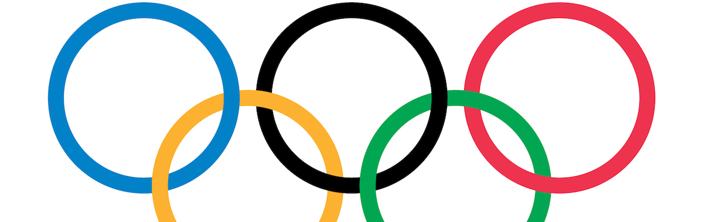
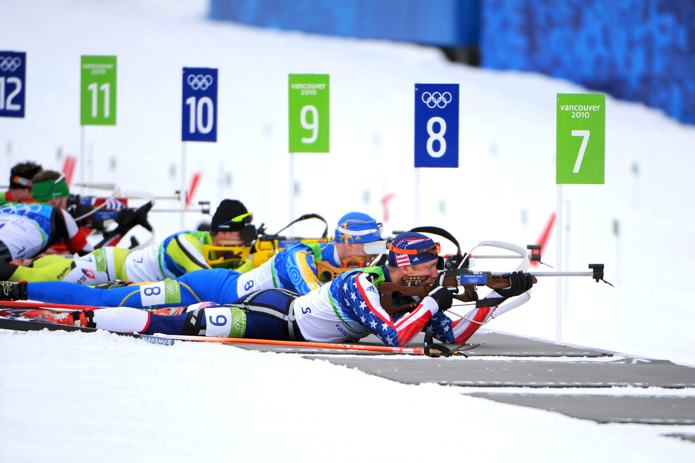

Winter Olympics Event Suggester
User, if you had an unexpected day off, how would you prefer to spend it:
User,you’re about to take a long road trip...what is the first thing you do?
User,you’re responsible for making dinner tomorrow night...thoughts?
User,what is the first thing you do when you wake up in the morning?
User,if you were forced to eat an egg right now, how would you ask it to be cooked?
Not Olympic Material!
If you can't even answer 1 of 5 questions, you are not cut out to be an Olympian!
Endurance Events
Not the most thrilling of the Olympic sports, these olympic events ask competitors to demonstrate how good they are at enduring. Your choices indicate that you are dedicated, not afraid of hard work, and willing to do the boring things no one else wants to do.
Biathlon
Biathlon combines two sports - cross-country skiing and rifle shooting.
Cross-Country Skiing
For this sport, skiers rely on their own locomotion to move across snow-covered terrain, rather than using lifts.
Nordic Combined
This sport comprises two types of skiing - cross-country and jumping.
Tricks and Style
Substituting speed for style, these Olmpic events are judged on creativity and accuracy. Competitors must be willing to try new tricks and must do it all with their own flair. Your choices indicate that you are unique, creative, and would rather dance than run.
Figure Skating
Figure skating sees individuals, duos, or groups performing on figure skates on ice.
Freestyle Skiing
Commonly referred to as freeskiing and jibbing, this sport can consist of a skier performing aerial flips and spins. It can also see skiers sliding rails and boxes on their skis.
Snowboarding
In some disciplines athletes descend a snow-covered hill on a snowboard, while in others they move on a purpose built ramp, performing tricks in the air.
Team Games
Of all the olympic events, only two of them are not based on time or judged. These events are for those competitors who enjoy strategy, whethere fast or slow paced. Competitors must be smart and mentally tough to be successful. Your choices indicate that you thoughtful, tactile, and well-planned.
Curling
Sometimes referred to as 'chess on ice', curling is a strategic sport.
Ice Hockey
Fast and sometimes violent, it's a contact sport played on an ice rink between two teams of six skaters, who try to drive a rubber puck into the opposing goal with hooked sticks.

Getting Downhill
Most people would think reaching the top of the mountain is the goal, but, unlike the masses, you want to get down the mountain as fast as you can. These sports all involve competitors moving down the mountain at extremely high speeds. Your choices indicate that you like to go fast, want that adrenaline rush, and don't mind getting a little crazy.
Alpine Skiing
This is the sport of sliding down snow-covered hills on skis with fixed-heel bindings.
Bobsleigh
Sometimes called bobsled, this involves teams of two or four people making timed runs down narrow, twisting, banked, ice tracks in a gravity-powered vessel.
Luge
This sport involves riders hurtling down a slippery ice track feet first at high speed on a light sled. Lying on their back, they rely on their reflexes to steer.
Skeleton
Riders hit speeds of 80 mph as they ride a small sled, head first, at high speed down a frozen track while lying face-down.
Ski Jumping
Ski jumping involves jumping off hills on skis.
Circular Races
These Olympic events involve skaters racing around a circular track trying to finish with the fastest time. Broken into two types, Short Track and Long Track, each offers its own unique style of racing. Skaters must be disciplined, exhibit great stamina, and be able to turn on a dime. Your choices indicate that you like routines, are well-planned out, and become the master of tasks you do repeatedly.
Short Track Speed Skating
Not for the faint-hearted, this sport sees skaters hitting speeds of 30 mph, and, with overtaking permitted, crashes aren't uncommon. It involves either four or six competitors racing around an oval track.
Speed Skating
Speed skating is marked mainly by athletes racing in heats against the clock. Two skaters are simultaneously circling the track, but they are racing time more than they are in direct competition with one another.